Little Logbook is a view and extraction program for the FSX logbook. It allows fast and intuitive search and grouping of logbook entries based on several parameters, as well as export to HTML and CSV documents.
Additional information about airports can be shown together with the MakeRunways Utility by Peter Dowson.
Little Logbook has not been tested with Prepare3d or FSX SE.
An installer or setup program is not available.
Do not extract the archive into the folder c:\Program Files\ or c:\Program Files (x86)\ since you will need administrative privileges in some Windows versions. Since Windows keeps control on these folders other problems might occur, like replaced or deleted files.
Extract the Zip archive into a folder, like c:\Own Programs\Little Logbook. Then start the program by double-clicking littlelogbook.exe.
Little Logbook is a 32-bit application and was tested with Windows XP, Windows 7 64-bit and Windows 8.1 64-bit.
When started the first time the program tries to find the file Logbook.BIN and to load this file into an internal database. A file selection dialog will appear, if the file couldn't be found.
The program remembers the selected logbook file. If Little Logbook finds the file to be changed on startup, it will reload it into the internal database.
Optionally install and run the MakeRunways Utility by Peter Dowson to create the file runways.xml in the FSX base directory. This allows to show and search for additional airport information.
Additional information that can be shown in the table view, is airport name, city, state and country. More information is available as a tooltip in the from and to ICAO field.
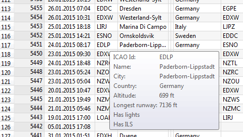
Picture above: Airport information that will be shown when runways.xml has been loaded.
If the file runways.xml was found and loaded, it will be checked for changes and reloaded on demand.
The MakeRunways utility can be downloaded from Peter Dowsons page. Follow the installation instructions in the included readme file.

Opens another Logbook.BIN file and loads it into the internal database. Little Logbook remembers the file and will reload it if it has changed.
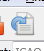
Reloads the previously selected Logbook.BIN file into the internal database.
Exits the program after an question dialog which can be optionally disabled.
Shows or hides the respective windows or bars. Little Logbook keeps track of these settings.
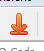
The table view does not show all logbook entries initially. This menu item allows to load and show all entries. Only a part of the entries is shown again after a search filter is modified or the sort order is changed.
The number of all, visible and selected entries is shown in the status bar.

Resets the sort order, the column order and column widths back to the default view after showing a question dialog.

Deletes all search filters and shows all logbook entries again in the table view. See below for information about search filters.
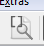
A previously grouping is released and the tables view goes back to the normal view. See below about grouping.
Either all or only the selected logbook entries can be exported.
All exported files will be opened in a suitable application, if this menu item is checked. A web browser is used for HTML documents and Excel or LibreOffice Calc for CSV documents.
The CSV export writes all columns in the same order independent of the view. This behavior differs from the HTML export.
The field separator is ; and " is used to mark text. The used codepage depends on the operating system settings. For western European Windows it is often Windows-1252. For Mac and Linux UTF-8.
The HTML export creates the exported document with the same column order and sorting, as shown in the current table view. This also applies to grouped views.
Columns that are resized to the minimum width are not exported. This is a way to design the exported document to a limited extent.
Note that too large files can result in long loading times or can even crash the browser. Therefore, the number of entries should be limited below 5,000 log entries by a search filter or a selection.
All dialogs that have been turned off with Do not show this Dialog again check-box will be shown again.
Shows this help.
Displays information about Little Logbook.
Displays information about the Qt Toolkit used for programming.
All filters can be used in parallel. The search filters can be linked with an and and an or condition.
If the runways.xml of MakeRunways Utility file was not loaded, some search fields are hidden.
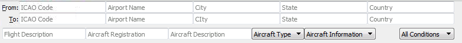
Picture above: filters that are displayed when the file runways.xml was found.
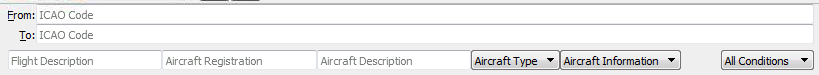
Picture above: The reduced search bar when runways.xml was not found.
A short tooltip help about searching is available above the labels From: and End:.
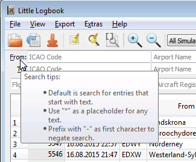
The standard search filters for terms in the logbook that begin with the entered text.
The wildcard * stands for any text. Once a * is included in the term, the standard search is no longer used.
If the first character in a search box is a - that search is negated (find all entries , that do not match).
The setting in this combo box defines how the the search filters are to be linked.
All Conditions: All filters have to match to show entries in the table view (and-condition).
Any Condition: At least one filter has to match to show entries in the table view (or-condition).
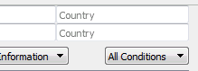
KEE in From: ICAO Code finds KEED and KEEN.
*EE in From: ICAO Code finds UUEE.
*EE* in From: ICAO Code finds EEK, KEED, UUEE, KEEN.
PH in From: ICAO Code and PH in To: ICAO Code in combination with the condition All Conditions finds all flights within Hawaii.
PH in From: ICAO Code und PH in To: ICAO Code in combination with the condition Any Condition finds all flights having Hawaii as start or destination.
-*Beech* in Aircraft Description finds all flights that were not carried out with a Beechcraft aircraft.
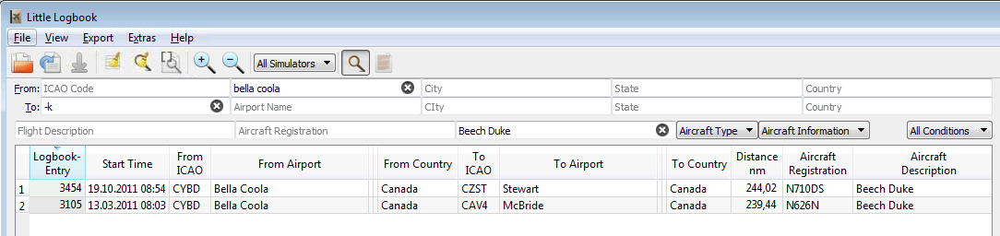
Picture above: Search for all flights with the Beech Duke starting in Bella Coola that do not have a destination in the USA (K-region).
The table view has two views:
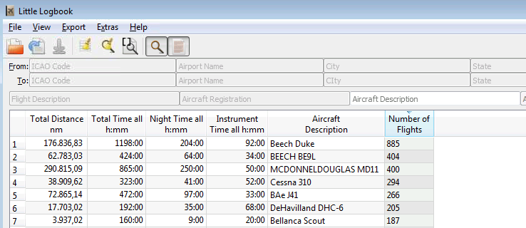
Picture above: The table view is grouped by plane description and sorted by number of the flights in descending order to find the most flown aircraft.
The header of the table view allows the following manipulations:
The program remembers the column widths and positions until Reset View is executed.
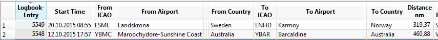
Picture above: The gaps between from airport and from country were reduced to minimum size. They are therefore excluded from the HTML export.
The following columns are displayed in normal view:
Logbook-Entry: The number of the logbook entry. Is the time sequence when the flight took place. The largest number is the last flight.
Start Time: The date and time of the flight, which were set in the flight simulator. A tooltip displays a detailed date.
From ICAO: The three- or four-digit ICAO code of the starting airfield. A tooltip displays more information about the airfield*.
From Airport*
From City*
From State*: State or province, if available.
From Country*
To ICAO: The three- or four-digit code of the destination ICAO airfield code. A tooltip displays more information about the airfield*.
To Airport*
To City*
To State*: State or province, if available.
To Country*
Distance*: Shortest Distance between start and destination airport in nautical miles. A tooltip shows the distance in kilometers. This is not the actually flown distance, but the straight line distance between start and finish.
Flight Description: Comment on the flight, which can be set in the simulator.
Total Time: Duration of the flight in hours and minutes.
Night Time: The night share in hours and minutes.
Instrument Time: The instrument share (or IFR) due to low visibility or clouds in hours and minutes.
Aircraft Registration: The registration code of the aircraft, such as N710DS.
Aircraft Description: Description of the aircraft, for example Beech Duke.
Aircraft Type: Type of the aircraft, such as helicopter or fixed wing.
Aircraft Information: Other information about the aircraft. Currently only shows whether the aircraft is multi-engine or not.
Visits Airports/Landings: Intermediate targets and number of landings.
* These columns are only available when the runways.xml of MakeRunways Utility file has been loaded.
The status bar displays the total number of entries, the number of visible entries and selected logbook entries in the table view.
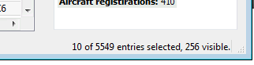
Certain items in the context menu of the table view are not always available. You cannot create any grouping by flight time for example, because no meaningful result can be expected.

The function of these menu items is identical to those on the View menu.
Takes the text of the field under the cursor and sets the search filter for an including or an excluding search.
Allows grouping by a column. All the same values in this column will be combined and the totals for other columns will be shown.
Thus, e.g. a grouping by aircraft description, the number of flights and total flight time will be displayed for each aircraft type.
To return to the normal view, select the menu item Ungroup.
This displays information about the entire logbook. The contents of this view can be copied as formatted text and then inserted into documents or web pages.
The statistics window is a so-called dock window, which can be docked in the main window at different locations or even be removed from the main window.
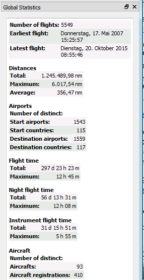
This program is free software: you can redistribute it and/or modify it under the terms of the GNU General Public License as published by the Free Software Foundation, either version 3 of the License, or (at your option) any later version.
This program is distributed in the hope that it will be useful, but WITHOUT ANY WARRANTY; without even the implied warranty of MERCHANTABILITY or FITNESS FOR A PARTICULAR PURPOSE. See the GNU General Public License for more details.
You should have received a copy of the GNU General Public License along with this program. If not, see <http://www.gnu.org/licenses/>.